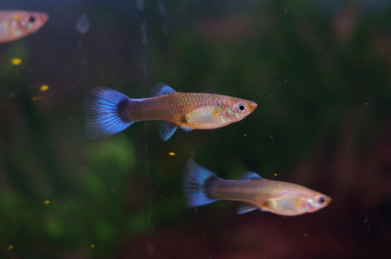

v19の色とv20の丸みを合わせました
v21をMacへ導入済み。24匹・8色、透明な青い水、左右の茂みと中央の砂道を保持しています。以前のv19は退避保存しました。
3版を同じ姿勢と光で
v19：導入前v20：写真参照の候補v21：今回の統合版 v20の銀褐色と薄い桃色へ、v19の色を局所的に戻しました。腹の丸みと尾の曲線を保ち、尾の手前と鼻先にも厚みを追加しています。横姿の比較を原寸で開く
参照した写真と斜めの比較


Macアプリの実際の描画
 アプリのWKWebView診断スナップショット。デスクトップ全体の合成画像ではありません。
アプリのWKWebView診断スナップショット。デスクトップ全体の合成画像ではありません。
約65秒の遊泳記録
固定時間刻みで作ったブラウザーの比較記録です。Mac実機の負荷は以下で別に測定しています。
8色の全周旋回
実機で各90秒を測定
| 状態 | v19 CPU | v21 CPU | v21フレーム増加 | fps |
|---|
| 表示中 | 15.40% | 15.74% | 2700 | 29.996 |
| 全面を隠した時 | 0.41% | 0.36% | 0 | 0.000 |
| 一時停止 | 0.16% | 0.14% | 0 | 0.000 |
CPUの100%は1コア分。被覆・停止時は両画面の描画増加ゼロ。停止は保存設定による検査で、水槽メニューの実操作とは分けています。
検証の詳細・メモリ実測
残っていること
写真にある肌の不規則さや柔らかい反射には差が残っています。水槽メニュー、実カーソル反応、Dock、ドラッグ、実スリープ・再ログインは未確認です。全項目完了にはしていません。
残る実操作の確認手順 · 起動・餌やり・停止・元に戻す手順